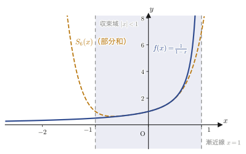
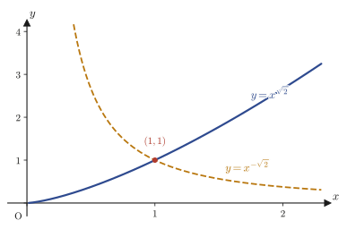
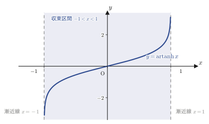

第39章べき級数解法とフロベニウスの理論
第33章から第38章まで，私たちは定数係数の（あるいは，オイラーの方程式のように変数変換で定数係数に帰着できる）線形微分方程式を解いてきた．特性方程式を立てて指数関数 $e^{\lambda x}$ を代入する，あるいは演算子 $D=\dfrac{\dd}{\dd x}$ を「ただの文字」のように扱って逆演算子を作る——いずれの方法も，方程式の係数が $x$ によらない定数だからこそ成り立つ技である．
しかし，物理学・材料科学に現れる微分方程式の多くは，係数が $x$ に依存する．次章で学ぶルジャンドルの微分方程式 $(1-x^2)y''-2xy'+n(n+1)y=0$ も，その次のベッセルの微分方程式 $x^2y''+xy'+(x^2-n^2)y=0$ も，係数はどちらも $x$ の関数であり，特性方程式も演算子法も使えない．では，こうした方程式はどう解けばよいのか．本章では，その答えとなる級数解法（power series method）と，特異点のまわりでこれを一般化したフロベニウスの理論（Frobenius' method，フェルディナント・ゲオルク・フロベニウス Ferdinand Georg Frobenius に由来）を学ぶ．考え方はシンプルである——解 $y$ が無限級数 $\sum a_k x^k$ の形に書けると仮定し，それを微分方程式に代入して係数 $a_k$ を決める．この一見素朴な方法が，次章以降で扱うルジャンドル多項式・ベッセル関数といった「特殊関数」の理論全体を支える土台になる．
- 「すべての関数はすべての実数で整式として表せる」という命題が偽であること——反例 $f(x)=\dfrac1{1-x}$ とダランベールの判定法による収束半径の計算
- 級数解法の3ステップ（級数解を仮定→代入して漸化式を解く→係数を代入する）と，収束半径の定義
- 2階同次線形微分方程式 $y''+P(x)y'+Q(x)y=0$ における通常点と確定特異点の定義，および「解析的」（テイラー展開可能）という言葉の意味
- 確定特異点のまわりでのフロベニウス級数 $y=(x-\alpha)^{\lambda}\sum a_k(x-\alpha)^k$ と，それが満たすべき決定方程式 $\lambda(\lambda-1)+a_0\lambda+b_0=0$ の導出
- 決定方程式の2根 $\lambda_1,\lambda_2$ の位置関係（一致するか，差が整数かどうか）によって基本解の形が変わること
- 通常点まわりの級数解法（ノートの例：$y''-\dfrac{2x}{1-x^2}y'=0$）と，確定特異点まわりのフロベニウス級数解法（ノートの例：$y''+\dfrac3xy'-\dfrac3{x^2}y=0$）を，実際に手を動かして解く
もとにしたノート：望月泰英『数学ノート 常微分方程式』 pp. 51–59．
39.1 なぜ級数解法が必要か — マクローリン展開の限界
なぜ？：この章の動機
次章で学ぶルジャンドルの微分方程式や，その次の章で学ぶベッセルの微分方程式は，係数が $x$ の関数であり，これまでの特性方程式・演算子法では手が出ない．そこで発想を変える．解 $y(x)$ が無限級数（べき級数）として書けると仮定し，微分方程式に代入して係数を決定する——これが本章の級数解法である．しかし，この方針にはただちに疑問が浮かぶ．「本当にどんな関数も，無限級数（＝無限次の整式）として書けるのか？」．この問いに答えることから始めよう．
まず，次の命題を考えてみる．
命題 「すべての関数 $f(x)$ は，すべての実数 $x$ において，$x$ の整式（多項式，もしくはその項が無限に続いたもの）で表すことができる．」
これは真だろうか，偽だろうか．答えを先に言うと偽である．反例を1つ見つければ，命題全体が偽であることが示せる（数学では「すべての～」という主張は，1つでも当てはまらない例（反例）があれば偽になる）．反例として，次の関数を考える．
$$ f(x) = \frac{1}{1-x} $$この関数を $x=0$ のまわりでマクローリン展開する（マクローリン展開の一般論は次節39.2で正式に扱うが，ここでは高校数学（数学III）で学んだ等比数列の和の公式 $\dfrac{1}{1-x}=1+x+x^2+\cdots+x^{n-1}+\dfrac{x^n}{1-x}$ において $n\to\infty$ とする素朴なやり方で確認しておく）．公比 $x$ の無限等比級数として，
$$ f(x) = \frac{1}{1-x} = 1+x+x^2+\cdots+x^n+\cdots \qquad \cdots\text{①} $$が得られる．ここで，①式の右辺の係数はどれも $a_n=1$ である．この無限級数がどんな $x$ で意味を持つ（収束する）かを調べるために，ダランベールの判定法（d'Alembert's ratio test，比の判定法）を使う．これは，級数 $\sum a_n x^n$ の隣り合う係数の比の極限
$$ r = \lim_{n\to\infty}\left|\frac{a_n}{a_{n+1}}\right| $$を計算し，$\abs{x} \lt r$ の範囲でだけ級数が収束する（$r$ を収束半径，radius of convergenceという．正式な定義と一般論は次節39.2で与える）という判定法である．今の場合 $a_n=1$（$n$ によらず一定）なので，
$$ r = \lim_{n\to\infty}\left|\frac{1}{1}\right| = 1 $$となる．つまり，①式が成り立つ（＝級数が $f(x)$ に収束する）のは
$$ \abs{x} \lt 1 \quad \text{すなわち} \quad -1 \lt x \lt 1 $$の範囲に限られる．実際，$x=2$ を①式の右辺に代入すると $1+2+4+8+\cdots$ となり，これは無限大に発散してしまい，左辺の有限な値 $f(2)=\dfrac{1}{1-2}=-1$ とはまったく対応しない．
結論：命題は偽である
①式は $\abs{x}\lt1$ の範囲でしか $f(x)=\dfrac1{1-x}$ を表すことができない．つまり，$f(x)=\dfrac1{1-x}$ という（$x=1$ 以外のすべての実数で定義された，何回でも微分できる）関数を，すべての実数 $x$ で整式として表すことはできない．したがって，最初の命題「すべての関数はすべての実数で整式として表せる」は偽である．（証明終わり）
この結論は一見ネガティブに見えるが，実は級数解法にとって重要な指針を与えている．級数は「その関数と等しくなる範囲（収束半径の内側）」でだけ意味を持つ道具であるということだ．本章でこれから微分方程式の解を級数の形に求めていくときも，「どこまでの $x$ でその級数が意味を持つか」を常に意識する必要がある（一般に，方程式の係数が特異点を持たない範囲——次節で学ぶ「通常点」のまわり——では，級数解の収束半径はその特異点までの距離に一致することが知られている）．

例題39.1 $f(x)=\dfrac1{1+x^2}$ のマクローリン展開と収束半径
$f(x)=\dfrac{1}{1+x^2}$ をマクローリン展開し，ダランベールの判定法で収束半径を求めよ．
解答 $-x^2$ を公比とする等比級数とみて（$\dfrac1{1-t}=1+t+t^2+\cdots$ に $t=-x^2$ を代入する），
$$ f(x) = \frac{1}{1+x^2} = \frac1{1-(-x^2)} = 1+(-x^2)+(-x^2)^2+(-x^2)^3+\cdots = 1-x^2+x^4-x^6+\cdots $$を得る．この級数の係数は，奇数次はすべて $0$ で，偶数次 $x^{2m}$ の係数が $a_{2m}=(-1)^m$ である．隣り合う（$0$ でない）係数の比は
$$ \left|\frac{a_{2m}}{a_{2m+2}}\right| = \left|\frac{(-1)^m}{(-1)^{m+1}}\right| = 1 $$で，$m$ によらず常に $1$ である．したがってダランベールの判定法（式の形は $x^2$ を1つの変数と見て使う）より収束半径は $r=1$，すなわち $\abs{x}\lt1$ で級数は $f(x)$ に収束する．（sympyの $\mathrm{series}$ で $1-x^2+x^4-x^6$ が展開の最初の4項と一致することを検算済み．実際 $x=1$ を代入すると $f(1)=1/2$ は有限だが，級数側は $1-1+1-1+\cdots$ となって値が定まらず，境界 $x=\pm1$ ちょうどでは級数が収束しないことも確認できる．）
39.2 級数解法の手順とテイラー展開の基礎
$e^x,\sin x,\cos x$ のような関数は何度でも微分できる（$C^\infty$ 級という）ので，色々な形に級数展開できる．この事実を逆手にとって，微分方程式の解そのものが無限級数の形で表せると仮定し，元の微分方程式に代入することで，級数の各係数が満たすべき条件（漸化式）を導き，それを解いて係数を確定する——これが級数解法（power series method）である．手順をまとめておく．
数学ノート：級数解法の3ステップ
- Step 1. 解 $y$ が無限級数 $y=\sum_{k}a_k x^k$（あるいは，次節で学ぶより一般の形）で表せると仮定する．
- Step 2. その級数を，$y,y',y''$ の形でもとの微分方程式に代入し，得られた恒等式から係数 $a_k$ どうしの関係式（漸化式，recurrence relation）を導いて解く．
- Step 3. Step 2 で求めた係数（漸化式の解）を，Step 1 の級数に代入して，具体的な級数解を得る．
Step 1 で「級数で表せると仮定してよい」根拠となるのが，第4章で学んだマクローリン展開（テイラー展開の $a=0$ の場合）である．ここで結果だけ簡潔に振り返っておこう．
数学ノート：マクローリン展開の復習（第4章）
関数 $f(x)$ が $x=0$ を含むある範囲で何度でも微分可能（このような関数を「解析的（analytic）」と呼ぶ——これは本章で繰り返し使う大事な言葉で，「（マクローリン）テイラー展開可能」という意味である）ならば，
\begin{equation} f(x) = \sum_{k=0}^{\infty}\frac{f^{(k)}(0)}{k!}(x-0)^k \label{eq:39-maclaurin} \end{equation}が成り立つ．ただし，これは剰余項 $R_{n+1}$（$n$ 次までの近似多項式と $f(x)$ の誤差）が $n\to\infty$ で $0$ に収束すること，つまりラグランジュの剰余項が $\displaystyle\lim_{n\to\infty}R_{n+1}=0$ を満たすことが前提である（第4章・定理4.1参照）．
また，係数 $a_k=\dfrac{f^{(k)}(0)}{k!}$ とおいたとき，この級数がどの範囲の $x$ で実際に収束するかを表すのが，39.1節ですでに使った収束半径である．ここで正式に定義しておく．
定義39.1 収束半径とダランベールの判定法
べき級数 $\displaystyle\sum_{k=0}^{\infty}a_k x^k$ に対し，
$$ R = \lim_{n\to\infty}\left|\frac{a_n}{a_{n+1}}\right| $$を（この極限が存在するとき）この級数の収束半径（radius of convergence）という．級数は $\abs{x}\lt R$ で（絶対）収束し，$\abs{x}\gt R$ で発散する（$\abs{x}=R$ ちょうどの境界では，級数ごとに収束したりしなかったりする）．
この定義を使うと，39.1節の反例は「$f(x)=\dfrac1{1-x}$ のマクローリン展開は $a_n=\dfrac{f^{(n)}(0)}{n!}=1$（$n$ によらず一定）なので，収束半径は $R=\displaystyle\lim_{n\to\infty}\left|\dfrac{1}{1}\right|=1$」という言葉できちんと述べ直すことができる．
39.2.1 基本的な関数のマクローリン展開
級数解法で頻繁に部品として使う，4つの基本的な関数のマクローリン展開を確認しておこう．いずれも第4章ですでに導出済みなので，ここでは結果を並べ，各自の収束半径を確認する．
数学ノート：4つの基本のマクローリン展開
\begin{equation} e^x = \sum_{k=0}^{\infty}\frac{x^k}{k!} = 1+x+\frac{x^2}{2!}+\frac{x^3}{3!}+\cdots \qquad (-\infty \lt x \lt \infty) \label{eq:39-exp-series} \end{equation} \begin{equation} \sin x = \sum_{k=0}^{\infty}\frac{(-1)^k}{(2k+1)!}x^{2k+1} = x-\frac{x^3}{3!}+\frac{x^5}{5!}-\frac{x^7}{7!}+\cdots \qquad (-\infty \lt x \lt \infty) \label{eq:39-sin-series} \end{equation} \begin{equation} \cos x = \sum_{k=0}^{\infty}\frac{(-1)^k}{(2k)!}x^{2k} = 1-\frac{x^2}{2!}+\frac{x^4}{4!}-\frac{x^6}{6!}+\cdots \qquad (-\infty \lt x \lt \infty) \label{eq:39-cos-series} \end{equation} \begin{equation} \log(1+x) = \sum_{k=1}^{\infty}\frac{(-1)^{k-1}}{k}x^k = x-\frac{x^2}{2}+\frac{x^3}{3}-\frac{x^4}{4}+\cdots \qquad (-1 \lt x \le 1) \label{eq:39-log-series} \end{equation}$e^x,\sin x,\cos x$ の3つは，$f^{(k)}(0)$ が周期的に（あるいは単純に）決まるため，どんな大きさの $x$ でも係数の比 $\left|a_n/a_{n+1}\right|$ が $n\to\infty$ で $\infty$ に発散し，収束半径は $R=\infty$（＝すべての実数で収束）になる．一方 $\log(1+x)$ は $x=-1$ に真の特異点（対数の定義域の端）を持つため，収束半径は $R=1$ にとどまる．
注意：ノートの誤記について（$\log(1+x)$ の第4項）
底本のノートでは $\log(1+x)$ の展開の第4項（$x^4$ の項）が「$+\dfrac{x^4}{4}$」と書かれているが，これは符号の誤記であり，正しくは式 \eqref{eq:39-log-series} のとおり「$-\dfrac{x^4}{4}$」である．実際，$f(x)=\log(1+x)$ とおくと $f'(x)=(1+x)^{-1}$，$f''(x)=-(1+x)^{-2}$，$f'''(x)=2(1+x)^{-3}$，$f^{(4)}(x)=-6(1+x)^{-4}$ なので $f^{(4)}(0)=-6$ である．マクローリン展開の係数は式 \eqref{eq:39-maclaurin} より $a_4=\dfrac{f^{(4)}(0)}{4!}=\dfrac{-6}{24}=-\dfrac14$ であり，$-\dfrac{x^4}4$ が正しい（符号が交互に入れ替わる交代級数 $(-1)^{k-1}$ の規則からも，$k=4$（偶数）は負符号でなければならない）．（sympyで4階微分係数とマクローリン係数を検算済み．）
例題39.2 $f(x)=e^{-x^2}$ のマクローリン展開と収束半径
$f(x)=e^{-x^2}$ のマクローリン展開の最初の4項を求め，収束半径を調べよ．
解答 式 \eqref{eq:39-exp-series} の $e^t=1+t+\dfrac{t^2}{2!}+\dfrac{t^3}{3!}+\cdots$ に $t=-x^2$ を代入すると，
$$ e^{-x^2} = 1+(-x^2)+\frac{(-x^2)^2}{2!}+\frac{(-x^2)^3}{3!}+\cdots = 1-x^2+\frac{x^4}{2}-\frac{x^6}{6}+\cdots $$を得る（$(-x^2)^2=x^4$，$(-x^2)^3=-x^6$ に注意）．これが最初の4項である．収束半径については，もとの $e^t$ の展開がすべての実数 $t$ で収束する（$R=\infty$，式 \eqref{eq:39-exp-series} 参照）ので，$t=-x^2$ もすべての実数 $x$ に対して有限な実数値をとることから，$e^{-x^2}$ の展開もすべての実数 $x$ で収束する．したがって収束半径は $R=\infty$ である．（sympyの $\mathrm{series}(e^{-x^2},x,0,8)$ が $1-x^2+\dfrac{x^4}2-\dfrac{x^6}6$ と一致することを検算済み．なお，この関数は統計学の正規分布の確率密度関数 $\propto e^{-x^2/2}$ の核になっている，応用上とても重要な関数である．）
39.3 フロベニウスの理論 — 通常点と確定特異点
いよいよ本章の主題である，2階同次線形微分方程式の級数解法の一般論に入る．対象とする方程式は次の形である．
$$ \frac{d^2y}{dx^2}+P(x)\frac{dy}{dx}+Q(x)y=0 \qquad \cdots\text{①} $$係数 $P(x),Q(x)$ がどんな関数であってもよいわけではない．級数解が存在するかどうかは，$P(x),Q(x)$ がある点 $x=\alpha$ で「性質のよい」関数かどうかにかかっている．ここで鍵になる言葉が「解析的」である．
Meaning：「解析的である」とは
ノートの欄外注記のとおり，「解析的である」（analytic）とは「（その点のまわりで）テイラー展開可能である」ということである．つまり，関数 $g(x)$ が $x=\alpha$ で解析的とは，$g(x)$ が $x=\alpha$ の近くで何度でも微分可能で，かつ $g(x)=\displaystyle\sum_{k=0}^{\infty}\dfrac{g^{(k)}(\alpha)}{k!}(x-\alpha)^k$ という等式が実際に成り立つ，ということである．たとえば多項式や $e^x,\sin x,\cos x$ はすべての実数で解析的だが，$g(x)=1/x$ は $x=0$ でこそ解析的でない（そもそも定義されない）ものの，$x=0$ 以外のすべての点では解析的である．
39.3.1 通常点・特異点・確定特異点の定義
①の係数 $P(x),Q(x)$ について，点 $x=\alpha$ のまわりでの振る舞いにより，次の2つの場合に分ける．
定義39.2 通常点（ordinary point）
$P(x),Q(x)$ がともに $x=\alpha$ で解析的であるとき，点 $x=\alpha$ を①の通常点という．このとき①の解 $y$ も $x=\alpha$ で解析的であることが知られており（$P,Q$ がテイラー展開可能なら，それらから組み立てられる解 $y$ もテイラー展開可能になる，というイメージでよい），①は
$$ y=\sum_{k=0}^{\infty}a_k(x-\alpha)^k $$の形の級数解をもつ．通常点の代表例は $\alpha=0$ である．
定義39.3 特異点と確定特異点（singular point / regular singular point）
$P(x),Q(x)$ の少なくとも一方が $x=\alpha$ で解析的でないとき，点 $x=\alpha$ を①の特異点（singular point）という．特異点では，通常点のような（$(x-\alpha)$ の非負べきだけの）級数で解を表すことはできない．しかし，特異点の中でも次の条件を満たす「性質のよい」ものを考える——
$(x-\alpha)P(x)$ と $(x-\alpha)^2Q(x)$ がともに $x=\alpha$ で解析的であるとき，点 $x=\alpha$ を①の確定特異点（regular singular point）という．このとき①は，
\begin{equation} y=(x-\alpha)^{\lambda}\sum_{k=0}^{\infty}a_k(x-\alpha)^k \label{eq:39-frobenius-def} \end{equation}の形の級数解をもつ．この形の級数をフロベニウス級数（Frobenius series）という．（この条件を満たさない特異点は「非確定特異点」と呼ばれるが，そこでは一般に級数解の理論はもっと難しくなり，本書の範囲を超える．）
フロベニウス級数 $y=(x-\alpha)^{\lambda}\sum a_k(x-\alpha)^k$ は，通常点の級数解 $y=\sum a_k(x-\alpha)^k$ を一般化したものになっている——実際 $\lambda=0$ とすれば通常点の級数解に一致する．指数 $\lambda$ は整数とは限らず（後で見るように無理数や虚数になることもある），この「余分な指数」のおかげで，特異点でも級数解を作れるようになる．
数学ノート：多くの場合 $\alpha=0$ を考えればよい
実際に現れる微分方程式では，特異点の多くは $\alpha=0$（原点）である（次章のルジャンドルの方程式は $x=\pm1$ に，次々章のベッセルの方程式は $x=0$ に特異点をもつ）．そこで以下では $\alpha=0$ の場合に絞って，決定方程式を具体的に導く．一般の $\alpha$ の場合も，$x-\alpha$ をあらためて $x$ と置き直せば（平行移動すれば）まったく同じ議論になる．
例題39.3 $y''+y=0$ は $x=0$ で通常点であることの確認と級数解法
方程式 $y''+y=0$ について，$x=0$ が通常点であることを確認し，級数解法で解け（第1章・第2章で学んだ $\sin x,\cos x$ が実際に解になることを確かめよ）．
解答 ①の形に書くと $P(x)=0,\ Q(x)=1$ であり，どちらも定数関数（多項式の特別な場合）としてすべての実数で解析的である．特に $x=0$ で通常点である．したがって解は $y=\displaystyle\sum_{k=0}^{\infty}a_kx^k$ の形をもつ．項別に微分して，
$$ y'=\sum_{k=1}^{\infty}ka_kx^{k-1},\qquad y''=\sum_{k=2}^{\infty}k(k-1)a_kx^{k-2} $$元の方程式に代入すると，
$$ \sum_{k=2}^{\infty}k(k-1)a_kx^{k-2}+\sum_{k=0}^{\infty}a_kx^k=0 $$左の和で指標を $k\to k+2$ とずらす（$k(k-1)a_k x^{k-2}$ の $k$ を $k+2$ に置き換えると，和の下端は $k=0$ からになり，$x^{k-2}\to x^k$ になる）と，
$$ \sum_{k=0}^{\infty}(k+2)(k+1)a_{k+2}x^{k}+\sum_{k=0}^{\infty}a_kx^k=0 \ \Longrightarrow\ \sum_{k=0}^{\infty}\bigl\{(k+2)(k+1)a_{k+2}+a_k\bigr\}x^k=0 $$これが $x$ についての恒等式であることから，各次数の係数は $0$ でなければならず，漸化式
$$ a_{k+2}=-\frac{a_k}{(k+1)(k+2)} \qquad (k=0,1,2,\ldots) $$を得る．$a_0,a_1$ は自由に選べる（初期値に対応する）．$a_0=1,a_1=0$ とおくと，$a_2=-\dfrac1{2\cdot1}=-\dfrac12$，$a_4=-\dfrac{a_2}{4\cdot3}=\dfrac1{24}$，……となり，奇数次はすべて $0$ になるので
$$ y=1-\frac{x^2}{2!}+\frac{x^4}{4!}-\cdots=\cos x $$を得る．同様に $a_0=0,a_1=1$ とおくと $y=\sin x$ が得られる．一般解は，この2つの1次独立な解の1次結合 $y=C_1\cos x+C_2\sin x$ である．これは高校数学で知っている $y''+y=0$ の解と完全に一致する——級数解法は，見慣れた $\sin,\cos$ さえも，指数関数や三角関数の知識なしに，係数の漸化式だけから「発見」できる方法なのである．（sympyで漸化式と $\cos x$ の展開の一致を検算済み．）
39.3.2 決定方程式の導出
ここからは $\alpha=0$ での確定特異点まわりの級数解を，実際に構成していく．前提として，$xP(x)$ と $x^2Q(x)$ が $x=0$ で解析的であるとする（これが確定特異点の定義であった）．解析的ということはマクローリン展開できるということなので，
$$ xP(x)=a_0+a_1x+a_2x^2+\cdots, \qquad x^2Q(x)=b_0+b_1x+b_2x^2+\cdots $$とおける．両辺を $x,x^2$ でそれぞれ割ると，$P(x),Q(x)$ 自身は次のような「$1/x$ の項をもつ級数」（ローラン級数の一部）になる．
$$ P(x)=\frac{a_0}{x}+a_1+a_2x+a_3x^2+\cdots, \qquad Q(x)=\frac{b_0}{x^2}+\frac{b_1}{x}+b_2+b_3x+\cdots $$Attention！：$P(x),Q(x)$ は分数関数であることが多い
実際に確定特異点をもつ方程式では，$P(x),Q(x)$ はしばしば分数関数の形で与えられる．たとえば $P(x)=\dfrac3x,\ Q(x)=\dfrac2{x^2}$ のとき，$xP(x)=3,\ x^2Q(x)=2$ となる（$x$ の0次の定数関数で，もちろん解析的）ので，$a_0=3,b_0=2$ であり，それ以外の係数 $a_1,b_1,a_2,b_2,\ldots$ はすべて $0$ である．このように，$P(x),Q(x)$ が単純な分数関数のときは，$a_0,b_0$ だけを見ればよいことが多い．
この $P(x),Q(x)$ のもとで，①はフロベニウス級数の解 $y=x^{\lambda}\displaystyle\sum_{k=0}^{\infty}A_kx^k=\displaystyle\sum_{k=0}^{\infty}A_kx^{k+\lambda}$（ただし先頭の係数 $A_0\neq0$ とする——そうでないと $\lambda$ の値そのものがずれてしまう）をもつ．これを1回，2回微分すると，
$$ \frac{dy}{dx}=\sum_{k=0}^{\infty}(k+\lambda)A_kx^{k+\lambda-1}, \qquad \frac{d^2y}{dx^2}=\sum_{k=0}^{\infty}(k+\lambda)(k+\lambda-1)A_kx^{k+\lambda-2} $$注意：ノートの誤記について（$A_n$ と $A_k$）
底本のノートでは，上の2つの式の係数が「$A_n$」となっているが，和をとる指標は $k$ であり，直前の式（$y=\sum A_kx^{k+\lambda}$）でも係数は $A_k$ と書かれているので，「$A_n$」は「$A_k$」の書き誤りである．以下では正しく $A_k$ として進める．
級数で表した $P(x),Q(x),y,y',y''$ を，もとの微分方程式①に代入する．
$$ \begin{aligned} \frac{d^2y}{dx^2}+P(x)\frac{dy}{dx}+Q(x)y &= \Bigl\{\lambda(\lambda-1)A_0x^{\lambda-2}+\lambda(\lambda+1)A_1x^{\lambda-1}+\cdots\Bigr\} \\ &\quad+\left(\frac{a_0}{x}+a_1+a_2x+\cdots\right)\Bigl\{\lambda A_0x^{\lambda-1}+(\lambda+1)A_1x^{\lambda}+\cdots\Bigr\} \\ &\quad+\left(\frac{b_0}{x^2}+\frac{b_1}{x}+b_2+\cdots\right)\Bigl(A_0x^{\lambda}+A_1x^{\lambda+1}+\cdots\Bigr) \\ &= 0 \end{aligned} $$この右辺全体を，$x$ のべき（$x^{\lambda-2},x^{\lambda-1},x^{\lambda},\ldots$）ごとに整理し直す．ここで着目したいのは，もっとも次数の低い項 $x^{\lambda-2}$ である．この項は3つの括弧のそれぞれから，次のようにちょうど1つずつしか出てこない（他の組み合わせはすべてこれより高い次数になる）．
- 1行目（$y''$ の項）から：$\lambda(\lambda-1)A_0x^{\lambda-2}$（これがそのまま最低次）
- 2行目（$P(x)y'$ の項）から：$\dfrac{a_0}{x}\times\lambda A_0x^{\lambda-1}=a_0\lambda A_0x^{\lambda-2}$（$\frac1x$ の項と $y'$ の最低次の項の積）
- 3行目（$Q(x)y$ の項）から：$\dfrac{b_0}{x^2}\times A_0x^{\lambda}=b_0A_0x^{\lambda-2}$（$\frac1{x^2}$ の項と $y$ の最低次の項の積）
したがって，$x^{\lambda-2}$ の係数だけを取り出して整理すると，
$$ \bigl\{\lambda(\lambda-1)+a_0\lambda+b_0\bigr\}A_0\,x^{\lambda-2}+(\text{多項式})A_1\,x^{\lambda-1}+\cdots=0 $$を得る．この式は $x$ についての恒等式であり，かつ $A_0\neq0$（フロベニウス級数の定義よりそう仮定した）なので，$x^{\lambda-2}$ の係数はそれ自体で $0$ にならなければならない．すなわち，
を満たさなければならない．この $\lambda$ についての2次方程式を決定方程式（indicial equation）という．一方，$x^{\lambda-1}$ 以降の係数を $0$ とおいた式（上の式の「$(\text{多項式})A_1=0$」やそれ以降）は，$\lambda$ が決まったあとで $A_1,A_2,\ldots$ を $A_0$ から順に決めていく漸化式になる——これは39.5節の具体例（p58, p59のノートの例）で実際に手を動かして確認する．
検算：一般の場合の記号計算による確認
上の議論を，係数を文字のまま（$a_0,a_1,a_2$，$b_0,b_1,b_2$，$A_0,A_1,A_2,A_3$）扱う記号計算で追試すると，$y=x^{\lambda}(A_0+A_1x+A_2x^2+A_3x^3)$ を①に代入して得られる式を $x^{\lambda-2}$ で割った多項式の定数項（＝$x^{\lambda-2}$ の係数）が，ちょうど $A_0\{\lambda(\lambda-1)+a_0\lambda+b_0\}$ になることが，sympyによる展開・整理で確認できる．手計算のたどった道筋が正しいことの裏付けである．
例題39.4 $y''-\dfrac1xy'=0$ の $x=0$ における特異点の分類
方程式 $y''-\dfrac1xy'=0$ について，$x=0$ がどの種類の点か（通常点か，確定特異点か，それ以外か）を判定せよ．
解答 ①の形にすると $P(x)=-\dfrac1x,\ Q(x)=0$ である．$P(x)=-1/x$ は $x=0$ で定義すらされない（分母が $0$ になる）ので解析的ではなく，$x=0$ は特異点である．そこで $xP(x),x^2Q(x)$ を調べると，
$$ xP(x)=x\cdot\left(-\frac1x\right)=-1, \qquad x^2Q(x)=x^2\cdot0=0 $$となり，どちらも（定数関数として）$x=0$ で解析的である．したがって $x=0$ は確定特異点である．このとき $a_0=-1,b_0=0$（それ以外の $a_i,b_i$ も $0$）なので，決定方程式 \eqref{eq:39-indicial} は
$$ \lambda(\lambda-1)+(-1)\lambda+0=\lambda^2-2\lambda=\lambda(\lambda-2)=0 \ \Longrightarrow\ \lambda=0,\,2 $$となる．実際，$y=1$（定数関数，$\lambda=0$ に対応）は $y''=0,\ y'=0$ よりこの方程式の解であり，$y=x^2$（$\lambda=2$ に対応）も $y''=2,\ y'=2x$ より $2-\dfrac1x\cdot2x=2-2=0$ を満たすので，たしかに解である．（sympyでどちらも方程式を満たすことを検算済み．）
39.4 決定方程式の解と基本解
前節で，確定特異点 $x=0$ のまわりのフロベニウス級数解 $y=x^{\lambda}\sum_{k=0}^{\infty}A_kx^k$ を代入すると，最低次の項の係数から決定方程式 \eqref{eq:39-indicial} が導かれることを見た．決定方程式は $\lambda$ についての2次方程式なので，一般に2つの解 $\lambda_1,\lambda_2$ をもつ．本節ではこれを実際に解き，2根 $\lambda_1,\lambda_2$ の関係——一致するか，一致しないなら差が整数かどうか——によって基本解 $y_1,y_2$ の作り方がどう変わるかを整理する．
39.4.1 決定方程式の2根
決定方程式 \eqref{eq:39-indicial} の左辺 $\lambda(\lambda-1)+a_0\lambda+b_0$ を $\lambda$ について展開し整理すると，
\begin{equation} \lambda^2+(a_0-1)\lambda+b_0=0 \label{eq:39-indicial-expand} \end{equation}という，$\lambda$についての普通の2次方程式になる．これは高校数学で慣れ親しんだ2次方程式の解の公式がそのまま使え，
$$ \lambda=\frac{-(a_0-1)\pm\sqrt{(a_0-1)^2-4b_0}}{2} $$という2つの解 $\lambda_1,\lambda_2$ が得られる（$a_0,b_0$ は前節で定義した，$xP(x),\ x^2Q(x)$ のマクローリン展開の定数項である）．以下，実数解の場合は $\lambda_1\ge\lambda_2$ となるように番号をつける約束にする——後で見るように，大きい方の指数からベキ級数を組み立てると計算がいつもうまくいくからである．
定理39.1 決定方程式の2根と基本解の3つの場合
決定方程式 \eqref{eq:39-indicial-expand} の2根を $\lambda_1\ge\lambda_2$（実数の場合．複素数解の場合は(i)に含める）とする．このとき，方程式①の確定特異点 $x=0$ のまわりの2つの基本解 $y_1,y_2$ は，次の3つの場合に分かれる．
(i) $\lambda_1-\lambda_2$ が整数でないとき
$$ y_1=x^{\lambda_1}\sum_{k=0}^{\infty}a_kx^k,\qquad y_2=x^{\lambda_2}\sum_{k=0}^{\infty}b_kx^k \qquad (a_0=b_0=1\text{ と正規化してよい}) $$この場合，$\lambda_1,\lambda_2$ のどちらから出発しても，漸化式が滞りなく最後まで解けて，2つの独立なフロベニウス級数がそのまま得られる．
(ii) $\lambda_1=\lambda_2$（重解）のとき
$$ y_1=x^{\lambda_1}\sum_{k=0}^{\infty}a_kx^k,\qquad y_2=y_1\ln x+x^{\lambda_1}\sum_{k=1}^{\infty}c_kx^k $$(iii) $\lambda_1-\lambda_2=N$（正の整数）のとき
$$ y_1=x^{\lambda_1}\sum_{k=0}^{\infty}a_kx^k,\qquad y_2=Cy_1\ln x+x^{\lambda_2}\sum_{k=0}^{\infty}c_kx^k $$ただし定数 $C$ は，方程式によっては $0$ になることもある（39.5.2節の例題で，実際に $C=0$ になる場合を見る）．
注意：記号 $a_k,b_k$ の使い回しについて
ここで使っている $a_k,b_k$ は，39.3.2節で $xP(x)=a_0+a_1x+\cdots$，$x^2Q(x)=b_0+b_1x+\cdots$ として定義した $a_k,b_k$（係数 $P(x),Q(x)$ 自身のマクローリン展開の係数）とは別の記号である．表記を煩雑にしないために同じ文字を使い回しているが，定理39.1の $a_k,b_k$ は基本解 $y_1,y_2$ 自身の級数係数を指しており，指している対象がまったく違うことに注意してほしい．たとえば39.5.2節の例題39.8では，39.3.2節の意味での $a_0=3,\ b_0=-3$（$xP(x),x^2Q(x)$ の値）が登場するが，これは定理39.1の「$a_0=b_0=1$ と正規化してよい」という文の $a_0,b_0$（$y_1,y_2$ の級数の先頭係数）とはまったく無関係の値なので，混同しないようにしよう．
ノートのp56には，このうち(i)の場合の基本解の形だけが明記されている（次のp57は白紙で終わっており，(ii)(iii)の場合分けは書かれないまま，p58からは具体的な例題に進んでいる）．そこで(ii)(iii)は，本書で一般論として補って加えたものである．
なぜ？：整数差のときだけ特別扱いが必要になる理由
(ii)(iii)で対数 $\ln x$ が顔を出す理由は，第36章のオイラーの方程式——特性方程式 $\lambda^2+(a-1)\lambda+b=0$ が重解 $\lambda_0$ のとき，もう一つの基本解が $x^{\lambda_0}\ln x$ になったこと——を思い出すとつかみやすい．実は，オイラーの方程式 $x^2y''+axy'+by=0$ は，$P(x)=a/x,\ Q(x)=b/x^2$（$a_0=a,\ b_0=b$，それ以外の $a_i,b_i$ はすべて $0$）であり，フロベニウス級数のもっとも単純な場合（$k\ge1$ の項がすべて不要）にあたる．重解のときに同じ理由で対数が必要になるのは，したがって自然なことである．
(iii)で差が正の整数 $N$ になる場合が特別なのは，次の理由による．小さい方の根 $\lambda_2$ から係数 $c_k$ を決めていく漸化式は，$\{(\lambda_2+k)(\lambda_2+k-1)+a_0(\lambda_2+k)+b_0\}c_k=(\text{それまでに決まった係数からできる項})$ という形をしている．左辺の波括弧の中身は，決定方程式 \eqref{eq:39-indicial-expand} の左辺に $\lambda=\lambda_2+k$ を代入したものに他ならない．ところが $k=N$ のとき $\lambda_2+N=\lambda_1$ となり，$\lambda_1$ はまさに決定方程式のもう1つの根だから，この波括弧はちょうど $0$ になってしまう．右辺の「それまでに決まった係数からできる項」がたまたま $0$ ならば $c_N$ は自由に選んでよく（対数項は不要，$C=0$），そうでなければつじつまを合わせるために対数項が必要になる——これが(iii)の内実である（39.5.2節の例題39.8で，この現象が実際に $k=4$ で起きる場面を見る）．
例題39.5 $P(x)=\dfrac1x,\ Q(x)=-\dfrac2{x^2}$ のときの決定方程式
方程式 $y''+P(x)y'+Q(x)y=0$ で $P(x)=\dfrac1x,\ Q(x)=-\dfrac2{x^2}$ のとき，$x=0$ が確定特異点であることを確かめ，決定方程式を立てて $\lambda$ の値を求めよ．
解答 $xP(x)=x\cdot\dfrac1x=1$，$x^2Q(x)=x^2\cdot\left(-\dfrac2{x^2}\right)=-2$ となり，どちらも（$x$によらない）定数関数として $x=0$ で解析的である．よって $a_0=1,\ b_0=-2$（それ以外の $a_i,b_i$ はすべて $0$）であり，$x=0$ は確定特異点である．決定方程式 \eqref{eq:39-indicial-expand} は，
$$ \lambda^2+(1-1)\lambda+(-2)=\lambda^2-2=0 \ \Longrightarrow\ \lambda=\pm\sqrt2 $$となる．$\lambda_1=\sqrt2,\ \lambda_2=-\sqrt2$ であり，差は $\lambda_1-\lambda_2=2\sqrt2\approx2.83$ で整数ではない．したがって定理39.1の(i)にあたり，2つの基本解は素直に $y_1=x^{\sqrt2},\ y_2=x^{-\sqrt2}$ である（$a_0,b_0$ が定数で他の $a_i,b_i$ が $0$ の場合，$k\ge1$ の項もすべて $0$ でよく，級数は先頭の1項だけで完結する）．実際，$y=x^{r}$（$r$は定数）を方程式に直接代入すると $y'=rx^{r-1},\ y''=r(r-1)x^{r-2}$ なので，
$$ r(r-1)x^{r-2}+\frac1x\cdot rx^{r-1}-\frac2{x^2}\cdot x^{r}=\bigl\{r(r-1)+r-2\bigr\}x^{r-2}=(r^2-2)x^{r-2} $$となり，$r=\pm\sqrt2$ のときちょうど $0$ になることが確認できる（これは決定方程式 $\lambda^2-2=0$ そのものである）．（sympyで $r=\pm\sqrt2$ のどちらも方程式を満たすことを検算済み．）

0)．x^√2は原点からなめらかに立ち上がり単調に増加する．x^(-√2)はx=0に近づくにつれて上方へ発散し，xが大きくなるとともに0に近づいていく．両曲線はx=1で値1を共有して交わる．" style="max-width:640px;width:100%">39.5 級数解法の例題
ここまでの一般論を，ノートに載っている2つの具体的な微分方程式で実際に手を動かして確かめる．1つ目は通常点まわりの級数解法（39.5.1節），2つ目は確定特異点まわりのフロベニウス級数解法で，しかも決定方程式の2根の差が整数になってしまう場合（39.5.2節）である．
39.5.1 通常点まわりの級数解法
例題39.6 $y''-\dfrac{2x}{1-x^2}y'=0$（$-1\lt x\lt1$）の級数解法
方程式 $\dfrac{d^2y}{dx^2}-\dfrac{2x}{1-x^2}\dfrac{dy}{dx}=0$（$-1\lt x\lt1$）の解を，級数解法で求めよ．
解答 $P(x)=-\dfrac{2x}{1-x^2},\ Q(x)=0$ とおくと，$-1\lt x\lt1$の範囲では分母 $1-x^2$ が $0$ にならないので，$P(x)$（$Q(x)=0$は多項式なのでもちろん）は $x=0$ で解析的であり，$x=0$ は通常点である．したがって解は
$$ y=\sum_{k=0}^{\infty}a_k(x-0)^k $$の形で表せる．係数を求めるために，$y$を1回，2回微分する．
$$ \frac{dy}{dx}=\sum_{k=1}^{\infty}a_k\cdot kx^{k-1},\qquad \frac{d^2y}{dx^2}=\sum_{k=2}^{\infty}a_k\cdot k(k-1)x^{k-2} $$これらをもとの方程式に代入すると，
$$ \sum_{k=2}^{\infty}a_k\,k(k-1)x^{k-2} - \frac{2x}{1-x^2}\sum_{k=1}^{\infty}a_k\,kx^{k-1} = 0 $$右辺の分母 $1-x^2$ が邪魔なので，両辺に $1-x^2$ を掛けて分母を払う．このとき，第2項の和 $\sum_{k=1}^{\infty}a_k kx^{k-1}$ の先頭（$k=1$）の項だけを単独で取り出しておく——これは，このあと第1項の和（$k=2$から）と指数をそろえて比較しやすくするための準備である．
$$ (1-x^2)\sum_{k=2}^{\infty}a_k\,k(k-1)x^{k-2} - 2x\left(a_1+\sum_{k=2}^{\infty}a_k\,kx^{k-1}\right) = 0 $$左辺を展開する．$(1-x^2)$を第1項の和に分配し（$1$を掛けた部分と$-x^2$を掛けた部分に分かれる），$-2x$を括弧の中の $a_1$ と和のそれぞれに分配すると，
$$ \sum_{k=2}^{\infty}a_k\,k(k-1)x^{k-2} - \sum_{k=2}^{\infty}a_k\,k(k-1)x^{k} - 2a_1x - 2\sum_{k=1}^{\infty}a_k\,kx^{k} = 0 $$を得る（最後の項は，先ほど単独で取り出した $a_1x^0$ の分と，残りの和 $\sum_{k=2}^\infty$ の分とを，もとの $\sum_{k=1}^\infty$ の形にまとめて書いている）．最後に，すべての項を $x^k$ のべきでそろえて係数を比較したい．第1項の和 $\sum_{k=2}^{\infty}a_k k(k-1)x^{k-2}$ は指数が $x^{k-2}$ になっているので，指標を $k\to k+2$ とずらす（このずらしで和の下端も $k=0$ からになるので，$k=0$ の項 $2a_2$ と $k=1$ の項 $6a_3x$ をあらかじめ単独で取り出しておく）と，
$$ 2a_2 + 6a_3x + \sum_{k=2}^{\infty}a_{k+2}(k+1)(k+2)x^{k} - \sum_{k=2}^{\infty}a_k\,k(k-1)x^{k} - 2a_1x - \sum_{k=1}^{\infty}2a_k\,kx^{k} = 0 $$となる．ここで $x^0,x^1$ の項をそれぞれまとめ（$x^1$の係数は，$6a_3x$と，最後の和の$k=1$の項$-2a_1x$とを合わせて$6a_3-2a_1=2(3a_3-a_1)$），$x^k$（$k\ge2$）の係数は2つの和どうしをそのまま比較すればよいので，
\begin{equation} 2a_2 + 2(3a_3-a_1)x + \sum_{k=2}^{\infty}\bigl\{(k+1)(k+2)a_{k+2} - k(k+1)a_k\bigr\}x^{k} = 0 \label{eq:39-ex6-identity} \end{equation}を得る．式\eqref{eq:39-ex6-identity}は$x$についての恒等式なので，各次数の係数はそれ自体で$0$でなければならない．すなわち，
$$ a_2=0,\qquad 3a_3-a_1=0,\qquad (k+1)(k+2)a_{k+2}-k(k+1)a_k=0\ \ (k=2,3,\ldots) $$である．最後の漸化式は，$k+1\neq0$（$k\ge2$なので当然）で両辺を割ることができて，$a_{k+2}=\dfrac{k}{k+2}a_k$ となる．$a_2=0$から出発すると，この漸化式で偶数次の係数はすべて$0$になる．
$$ a_2=a_4=a_6=\cdots=0 $$一方，奇数次は$a_1$から次々と決まる．
$$ a_3=\frac13a_1,\qquad a_5=\frac35a_3=\frac15a_1,\qquad a_7=\frac57a_5=\frac17a_1 $$（一般に $a_{2m+1}=\dfrac1{2m+1}a_1$ というパターンになっている——分子の $\dfrac{k}{k+2}$ を次々に掛けていくと，途中の因数がすべて約分されて消えることを確認してみよ）．したがって，級数解は
\begin{equation} y=a_0+a_1\left(x+\frac{x^3}{3}+\frac{x^5}{5}+\frac{x^7}{7}+\cdots\right) \label{eq:39-ex6-series} \end{equation}となる．$a_0,a_1$は初期値に応じて自由に選べる2つの任意定数であり，これが基本解2つ分の自由度を与えている．
気づき：この級数はどんな関数か——第2章の逆双曲線関数とのつながり
式\eqref{eq:39-ex6-series}のかっこの中の級数 $x+\dfrac{x^3}3+\dfrac{x^5}5+\dfrac{x^7}7+\cdots$ に見覚えはないだろうか．これは第2章で学んだ逆双曲線正接関数（inverse hyperbolic tangent，$\tanh^{-1}x$，$\operatorname{artanh}x$とも書く）のマクローリン展開に他ならない．実際，$y=a_0+a_1\operatorname{artanh}x$ を方程式に直接代入すると（$\dfrac{d}{dx}\operatorname{artanh}x=\dfrac1{1-x^2}$ を使う），
$$ y'=\frac{a_1}{1-x^2},\qquad y''=\frac{2a_1x}{(1-x^2)^2} $$ $$ y''-\frac{2x}{1-x^2}y' = \frac{2a_1x}{(1-x^2)^2}-\frac{2x}{1-x^2}\cdot\frac{a_1}{1-x^2} = \frac{2a_1x-2a_1x}{(1-x^2)^2}=0 $$となり，厳密に方程式を満たすことが確かめられる（sympyで検算済み）．つまり，級数解法は「$\sin x,\cos x$ を知らなくても $y''+y=0$ から発見できた」（例題39.3）のと同じように，「$\operatorname{artanh}x$ という名前を知らなくても，係数の漸化式だけからその級数展開を発見できる」ことを示している．さらに，級数 $y=a_0+a_1\operatorname{artanh}x$ の収束半径がちょうど $1$（$\abs x\lt1$）であることは，39.1節で述べた一般則——級数解の収束半径は，方程式の係数が特異点を持つ最も近い点までの距離に等しい——のよい例になっている．実際，$P(x)=-\dfrac{2x}{1-x^2}$ は $x=\pm1$ で特異点（分母が$0$）を持ち，ちょうどその距離が$1$である（図39.4）．

例題39.7 $y''+\dfrac{2x}{1+x^2}y'=0$ の級数解法（例題39.6の類題）
方程式 $\dfrac{d^2y}{dx^2}+\dfrac{2x}{1+x^2}\dfrac{dy}{dx}=0$ の解を，級数解法で求めよ．
解答 $P(x)=\dfrac{2x}{1+x^2}$ は，分母 $1+x^2$ がすべての実数$x$で$0$にならないので，すべての実数で解析的であり，$x=0$は通常点である（例題39.6と符号が違うだけで，考え方はまったく同じである）．$y=\sum_{k=0}^{\infty}a_kx^k$ とおいて代入し，例題39.6とまったく同じ手順（両辺に$1+x^2$を掛けて分母を払い，指標をそろえて$x^k$の係数を比較する）をたどると，恒等式
$$ 2a_2+2(3a_3+a_1)x+\sum_{k=2}^{\infty}\bigl\{(k+1)(k+2)a_{k+2}+k(k+1)a_k\bigr\}x^k=0 $$が得られる（例題39.6の恒等式\eqref{eq:39-ex6-identity}と比べると，$-x^2$の項が$+x^2$の項に変わった分だけ符号がいくつか反転している）．したがって $a_2=0$，$3a_3=-a_1$，漸化式 $a_{k+2}=-\dfrac{k}{k+2}a_k$（$k\ge2$）を得る．偶数次はやはりすべて$0$になり，奇数次は
$$ a_3=-\frac13a_1,\qquad a_5=-\frac35a_3=\frac15a_1,\qquad a_7=-\frac57a_5=-\frac17a_1 $$と，符号が交互に入れ替わりながら決まっていく．よって級数解は
$$ y=a_0+a_1\left(x-\frac{x^3}{3}+\frac{x^5}{5}-\frac{x^7}{7}+\cdots\right) $$となる．かっこの中は逆正接関数（$\arctan x=\tan^{-1}x$）のマクローリン展開そのものであり，$y=a_0+a_1\arctan x$ が閉じた形の解である．実際 $\dfrac{d}{dx}\arctan x=\dfrac1{1+x^2}$ を使うと，例題39.6とまったく同様の計算で，$y=a_0+a_1\arctan x$ が方程式を厳密に満たすことが確かめられる（sympyで検算済み）．$\arctan x$ の展開の収束半径は$1$で，これも $P(x)=\dfrac{2x}{1+x^2}$ の特異点（$x=\pm i$，複素数の特異点だが，実数の収束半径にはやはり距離$1$として効いてくる）に対応している．
39.5.2 フロベニウス級数の例題 — 決定方程式の2根の差が整数になる場合
例題39.8 $y''+\dfrac3xy'-\dfrac3{x^2}y=0$（$x\neq0$）のフロベニウス級数解法
方程式 $\dfrac{d^2y}{dx^2}+\dfrac3x\dfrac{dy}{dx}-\dfrac3{x^2}y=0$（$x\neq0$）の解を求めよ．
解答 $P(x)=\dfrac3x,\ Q(x)=-\dfrac3{x^2}$ とおくと，
$$ xP(x)=x\cdot\frac3x=3,\qquad x^2Q(x)=x^2\cdot\left(-\frac3{x^2}\right)=-3 $$となり，どちらも（$x$によらない）定数関数として $x=0$ で解析的である．
注意：ノートの誤記について（$x^2Q(x)$ の符号）
底本のノートでは，この行が「$-x^2Q(x)=-3$」と，先頭に余分な負符号がついた形で書かれている．しかし実際に計算すると $x^2Q(x)=x^2\cdot\left(-\dfrac3{x^2}\right)=-3$ であり，先頭に負符号は不要である．事実，ノートの直後の文でも著者自身が（負符号なしで）「$x^2Q(x)$」と書いており，先頭の負符号は書き誤りと判断できる．以下は正しい $x^2Q(x)=-3$ として進める．
したがって $x=0$ は確定特異点であり，$y=(x-0)^{\lambda}\displaystyle\sum_{k=0}^{\infty}a_k(x-0)^k$ の形の解をもつ．$a_0=3,\ b_0=-3$ である．$y$ を1回，2回微分すると，
$$ \frac{dy}{dx}=\sum_{k=0}^{\infty}a_k(\lambda+k)x^{\lambda+k-1},\qquad \frac{d^2y}{dx^2}=\sum_{k=0}^{\infty}a_k(\lambda+k)(\lambda+k-1)x^{\lambda+k-2} $$である．これらをもとの方程式に代入すると，
$$ \sum_{k=0}^{\infty}a_k(\lambda+k)(\lambda+k-1)x^{\lambda+k-2} + \frac3x\sum_{k=0}^{\infty}a_k(\lambda+k)x^{\lambda+k-1} - \frac3{x^2}\sum_{k=0}^{\infty}a_kx^{\lambda+k} = 0 $$を得る．右辺の第2項，第3項は，それぞれ $\dfrac1x,\dfrac1{x^2}$ を和の中に掛け込めば，すべての項が同じ指数 $x^{\lambda+k-2}$ をもつ形にまとめられる（$\dfrac3x\cdot x^{\lambda+k-1}=3x^{\lambda+k-2}$，$-\dfrac3{x^2}\cdot x^{\lambda+k}=-3x^{\lambda+k-2}$ であることに注意）．こうしてすべての項を $x^{\lambda+k-2}$ でくくると，
$$ \sum_{k=0}^{\infty}\Bigl\{a_k(\lambda+k)(\lambda+k-1) + 3a_k(\lambda+k) - 3a_k\Bigr\}x^{\lambda+k-2} = 0 $$となる．これは $x$ についての恒等式なので，各 $k$ ごとに波括弧の中身が $0$ でなければならない．
\begin{equation} \bigl\{(\lambda+k)(\lambda+k-1)+3(\lambda+k)-3\bigr\}a_k=0 \qquad (k=0,1,2,\ldots) \label{eq:39-ex8-recursion} \end{equation}$k=0$ のときを考える．フロベニウス級数の定義より $a_0\neq0$ なので，波括弧の中身がそれ自体で$0$でなければならない．これはちょうど決定方程式 \eqref{eq:39-indicial-expand} に $a_0=3,b_0=-3$ を代入したものになっている．
$$ \lambda(\lambda-1)+3\lambda-3=\lambda^2+2\lambda-3=0 \ \Longrightarrow\ \lambda=1,\,-3 $$$\lambda_1=1,\ \lambda_2=-3$ であり，差は $\lambda_1-\lambda_2=4$ で正の整数である——定理39.1の(iii)にあたる，特別な注意が必要な場合である．
まず大きい方の根 $\lambda=1$ から $y_1$ を求める．$\lambda=1$を式\eqref{eq:39-ex8-recursion}に代入すると，
$$ \bigl\{(1+k)(k)+3(1+k)-3\bigr\}a_k=(k^2+k+3k+3-3)a_k=(k^2+4k)a_k=k(k+4)a_k=0 $$を得る．$k=1,2,3,\ldots$ の範囲では $k(k+4)\neq0$ なので，これらすべての $k$ で $a_k=0$ でなければならない．したがって級数は先頭の $a_0$ の項だけが残り，基本解の1つは
$$ y_1=a_0x \quad\text{すなわち}\quad y_1=x $$である．
次に，もう一方の根 $\lambda=-3$ から $y_2$ を求めようとすると，問題が起きる．39.4節の定理39.1でも触れたように，$\lambda_1-\lambda_2=4$（正の整数）のときは，小さい方の根から作る漸化式が途中で「共鳴」を起こす危険がある．実際，式\eqref{eq:39-ex8-recursion}に$\lambda=-3$を代入すると，波括弧の中身は $\{(k-3)(k-4)+3(k-3)-3\}=k(k-4)$（因数分解できることをsympyで確認済み）となり，$k=4$（＝$\lambda_1-\lambda_2$）でちょうど$0$になってしまう．つまり$\lambda=-3$からの漸化式は$k=4$のところで係数$a_4$が決まらなくなる——これは，$\lambda_2+4=\lambda_1=1$がもう一方の根と一致してしまうために起きる現象である．このとき，$a_4$が自由に選べてしまうと，できあがる級数は$y_1=x$の定数倍を余分に含んでしまい，$y_1$と1次独立な「本当に新しい」解になっているとは限らない（ロンスキアンが恒等的に$0$でないとは保証されない）．そこで，このまま押し切るのではなく，別の方法で$y_2$を求める．
ここで$y_2$を$y_1$を使って表す形として考えられるのは，定数倍 $y_2=Cy_1$（これは$y_1$自身の定数倍にすぎず，新しい情報を持たない）か，定数を加えた形 $y_2=C+y_1$（$C$は定数）のいずれかである．後者を実際に試してみよう．$y_2=C+x$とおくと $y_2'=1,\ y_2''=0$ なので，これを方程式に代入すると，
$$ \frac3x\cdot1-\frac3{x^2}(C+x)=\frac3x-\frac{3C}{x^2}-\frac3x=-\frac{3C}{x^2} $$となる．これがすべての$x$で$0$になるには$C=0$でなければならない．つまり$y_2=C+y_1$の形を試しても，得られるのは$y_2=y_1$（$1$次従属）だけであり，$y_1$とは独立な新しい解は出てこない（sympyで検算済み）．定数倍・定数加算のどちらの単純な形も失敗したので，定数$C$を$x$の関数$u(x)$に一般化してみる——
基本解が1つ分かっているときの手法（第36章，reduction of order，階数低減法とも呼ばれる）を使う．$y_1=x$が分かっているので，もう1つの解 $y_2$ はある関数 $u(x)$ を使って $y_2=u(x)y_1=x\,u(x)$ の形で表せるはずだと考える．このとき一般解は，$y_1$の係数を$C_1$，$y_2$の係数を$C_2'$として，
$$ y=C_1y_1+C_2'y_2=y_1\bigl(C_1+C_2'u(x)\bigr) $$と書ける．そこで，$y_2=x\,u(x)$（$u(x)$は未知関数）とおいて，これをもとの方程式に代入する．積の微分公式より
$$ y_2'=u+xu',\qquad y_2''=2u'+xu'' $$であり，これを方程式 $y''+\dfrac3xy'-\dfrac3{x^2}y=0$ に代入すると，
$$ (2u'+xu'')+\frac3x(u+xu')-\frac3{x^2}(xu)=xu''+2u'+\frac3xu+3u'-\frac3xu=xu''+5u'=0 $$（$\dfrac3xu$ と $-\dfrac3xu$ がちょうど打ち消し合い，$u'$ の係数が $2+3=5$ にまとまることに注意）．両辺に$x^2$を掛けて整理すると，
$$ x^3u''+5x^2u'=0 $$を得る（これはノートの結果と一致する）．これは$u$自身は現れず$u'$についての1階線形微分方程式なので，$w=u'$とおくと $x^3w'+5x^2w=0$，すなわち変数分離形 $\dfrac{w'}{w}=-\dfrac5x$ になる．両辺を積分すると，
$$ \ln\abs w=-5\ln\abs x+C_1 \ \Longrightarrow\ w=\frac{C_2}{x^5} $$となり（$C_2=\pm e^{C_1}$），さらに$u'=w=\dfrac{C_2}{x^5}$を積分すると，
$$ u=\int\frac{C_2}{x^5}\,dx=-\frac{C_2}{4x^4}+C_3=\frac{C_2'}{x^4}+C_3 \qquad (C_2'=-C_2/4) $$を得る．注目すべきは，この積分の過程で対数項がまったく現れなかったことである（もし$w=C_2/x^1$のように$1/x$の形が出ていれば，積分すると$\ln x$が出ていたはずである）．これが，39.4節の定理39.1(iii)で触れた「定数$C$が$0$になる場合」の具体例である．こうして
$$ y_2=x\,u(x)=x\left(C_3+\frac{C_2'}{x^4}\right)=C_3x+\frac{C_2'}{x^3} $$を得る．この右辺の $C_3x$ の部分は，すでに求めた $y_1=x$ の定数倍にすぎず新しい情報を持たない．したがって，$y_1$と1次独立な「真に新しい」第2の基本解は
$$ y_2=\frac1{x^3} $$である．（実際，$y_2=1/x^3$を方程式に直接代入すると恒等的に$0$になることをsympyで検算済み．また，ロンスキアン $W(y_1,y_2)=y_1y_2'-y_2y_1'=x\cdot\left(-\dfrac3{x^4}\right)-\dfrac1{x^3}\cdot1=-\dfrac4{x^3}$ は恒等的に$0$でないので，$y_1,y_2$は確かに1次独立である．）
以上より，一般解は
\begin{equation} y=C_1y_1+C_2y_2=C_1x+\frac{C_2}{x^3} \label{eq:39-ex8-general} \end{equation}である（sympyの $\mathrm{dsolve}$ でもまったく同じ一般解 $y=C_1x+C_2/x^3$ が得られることを検算済み）．
39.6 まとめと演習
39.6.1 まとめ
- 「すべての関数はすべての実数で整式（多項式）として表せる」という命題は偽である（反例 $f(x)=\dfrac1{1-x}$）．級数は，その収束半径 $\abs x\lt R$ の内側でだけ元の関数と一致する道具である．
- 級数解法の3ステップ：(1) 解 $y$ が級数で表せると仮定する，(2) 微分方程式に代入して係数の漸化式を導き解く，(3) 求めた係数を級数解に代入する．
- 2階同次線形微分方程式 $y''+P(x)y'+Q(x)y=0$ の点 $x=\alpha$ は，$P,Q$ がともに解析的なら通常点（級数解 $y=\sum a_k(x-\alpha)^k$），少なくとも一方が非解析的でも $(x-\alpha)P(x),(x-\alpha)^2Q(x)$ がともに解析的なら確定特異点（フロベニウス級数 $y=(x-\alpha)^{\lambda}\sum a_k(x-\alpha)^k$）に分類される．
- $\alpha=0$の場合，$xP(x)=a_0+a_1x+\cdots$，$x^2Q(x)=b_0+b_1x+\cdots$ とおくと，最低次の項の係数比較から決定方程式 $\lambda(\lambda-1)+a_0\lambda+b_0=0$（$=\lambda^2+(a_0-1)\lambda+b_0=0$）が導かれる．
- 決定方程式の2根 $\lambda_1\ge\lambda_2$ の関係によって基本解の形が変わる：(i) 差が整数でなければ2つとも素直なフロベニウス級数，(ii) 一致すれば $y_2=y_1\ln x+\cdots$，(iii) 差が正の整数なら $y_2=Cy_1\ln x+\cdots$（$C$は$0$のこともある）．
- 通常点の例（$y''-\frac{2x}{1-x^2}y'=0$）では級数解が $y=a_0+a_1\operatorname{artanh}x$ という既知の関数になり，収束半径が方程式の特異点までの距離に一致することを確認した．確定特異点で差が整数の例（$y''+\frac3xy'-\frac3{x^2}y=0$）では，基本解が1つ分かっているときの手法（$y_2=u(x)y_1$）で2つ目の基本解 $y_2=1/x^3$ を求めた．
次章では，この級数解法・フロベニウスの理論を実際の物理・工学に頻出する具体的な方程式——ルジャンドルの微分方程式——に適用する．ルジャンドルの方程式は $x=0$ が通常点である（本章39.5.1節の手法がそのまま使える）が，係数の漸化式を最後まで追うと，ある条件のもとで級数が有限項で止まり，多項式（ルジャンドル多項式）になるという興味深い現象が起きる．
39.6.2 演習問題
演習39.1 $\cos x$ の収束半径
$\cos x$ のマクローリン展開（式\eqref{eq:39-cos-series}）の収束半径を，ダランベールの判定法（定義39.1）で求めよ．
ヒント：$\cos x$の係数は偶数次だけに現れ，$x^{2k}$の係数は$a_{2k}=\dfrac{(-1)^k}{(2k)!}$である．$\left|\dfrac{a_{2k}}{a_{2k+2}}\right|$を計算し，$k\to\infty$の極限をとれ．
演習39.2 $y''-xy'-y=0$ の級数解法
方程式 $y''-xy'-y=0$ について，$x=0$が通常点であることを確認し，級数解法で係数の漸化式を求めよ．さらに$a_0=1,a_1=0$として，級数解の$x^6$までの項を書き下せ．
ヒント：例題39.6と同じ要領で，$y=\sum a_kx^k$を代入し，$x^k$の指数をそろえて係数比較する．今回は分母を払う必要がない分，例題39.6より簡単である．
演習39.3 半整数次のベッセル型方程式の分類
方程式 $y''+\dfrac1xy'+\left(1-\dfrac1{4x^2}\right)y=0$ について，$x=0$がどの種類の点か判定し，確定特異点であれば決定方程式を立てて$\lambda$の値を求めよ．
ヒント：$P(x)=\dfrac1x,\ Q(x)=1-\dfrac1{4x^2}$として，$xP(x),x^2Q(x)$がそれぞれ$x=0$でどんな級数になるかを調べる（$x^2Q(x)=x^2-\dfrac14$は多項式なので解析的である）．
演習39.4 決定方程式の複素数解
$P(x)=\dfrac1x,\ Q(x)=\dfrac1{x^2}$ のとき，決定方程式を立てて$\lambda$の値を求めよ．
ヒント：$a_0=1,b_0=1$を決定方程式\eqref{eq:39-indicial-expand}に代入するだけでよい．出てくる$\lambda$は実数とは限らないことに注意せよ．
演習39.5 $\log(1+x)$ の誤記の再検証
39.2節の box warn で指摘した，$\log(1+x)$のマクローリン展開の第4項の符号の誤記について，$f(x)=\log(1+x)$の4階微分係数$f^{(4)}(0)$を実際に計算し，正しい係数$a_4$が$-\dfrac14$であることを自分の手で確かめよ．
ヒント：$f'(x)=(1+x)^{-1}$から順に微分し，符号の変化を追う．$a_4=f^{(4)}(0)/4!$（式\eqref{eq:39-maclaurin}）である．
演習39.6 もし$\lambda_1-\lambda_2$が整数でなかったら
例題39.8の方程式 $y''+\dfrac3xy'-\dfrac3{x^2}y=0$ で，もし$Q(x)=-\dfrac3{x^2}$の代わりに$Q(x)=-\dfrac2{x^2}$だったとしたら（$P(x)=\dfrac3x$はそのまま），決定方程式の2根の差はどうなるか．また，その場合，基本解$y_2$を求める手順は例題39.8とどう変わるか説明せよ．
ヒント：$a_0=3,b_0=-2$として決定方程式$\lambda^2+2\lambda-2=0$を解け．差が整数でなくなるので，定理39.1のどの場合にあたるかを考えよ．
39.6.3 参考文献
- 望月泰英『数学ノート 常微分方程式』（手書き講義ノート）．本章の底本．
- 笠原晧司『微分方程式の基礎』（朝倉書店，1982年）．
- 矢野健太郎・石原繁『微分方程式』（基礎解析学コース，裳華房，1994年）．
- E. Kreyszig, Advanced Engineering Mathematics, 10th ed. (Wiley, 2011).（べき級数法・フロベニウス法の章）